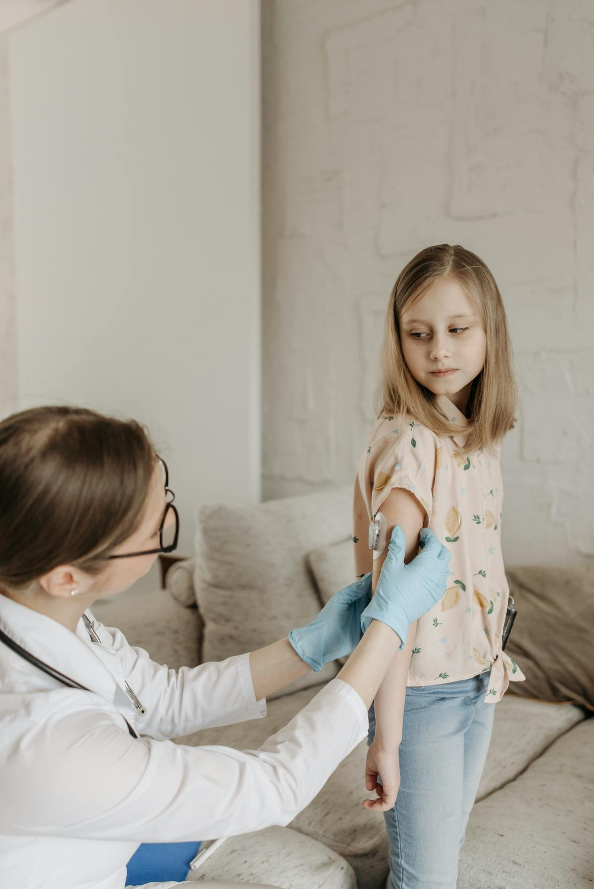
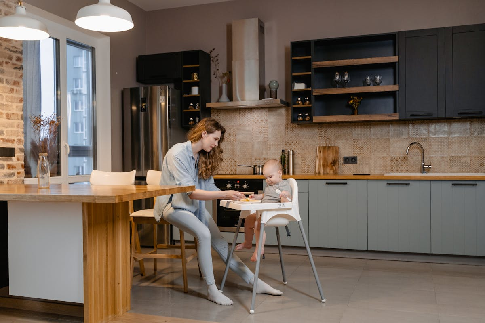
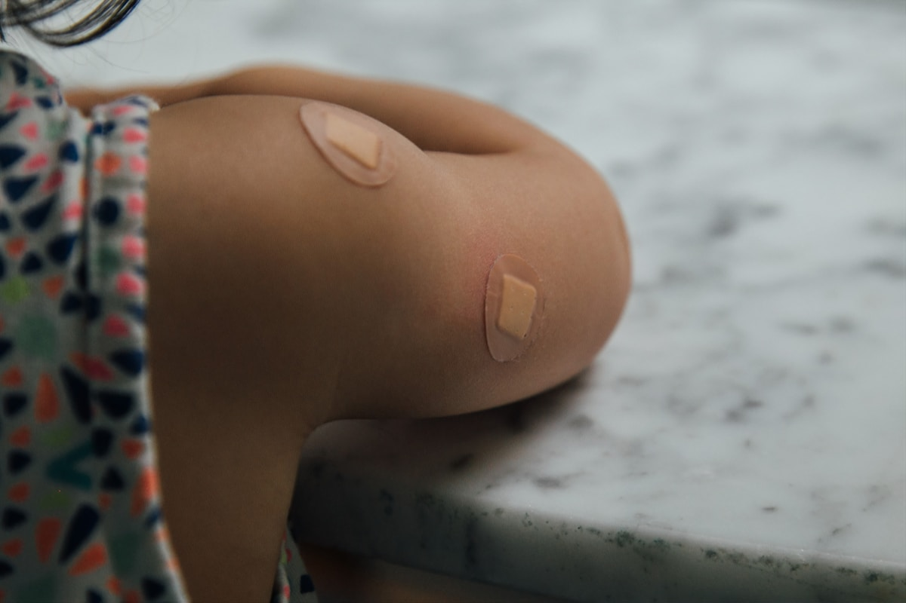
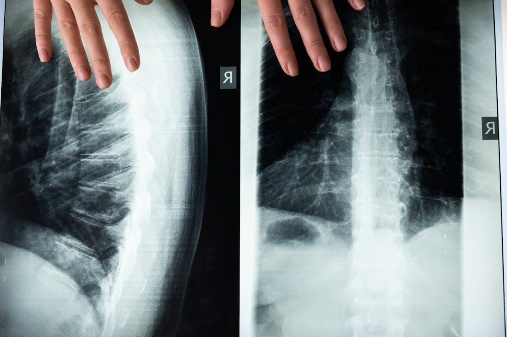
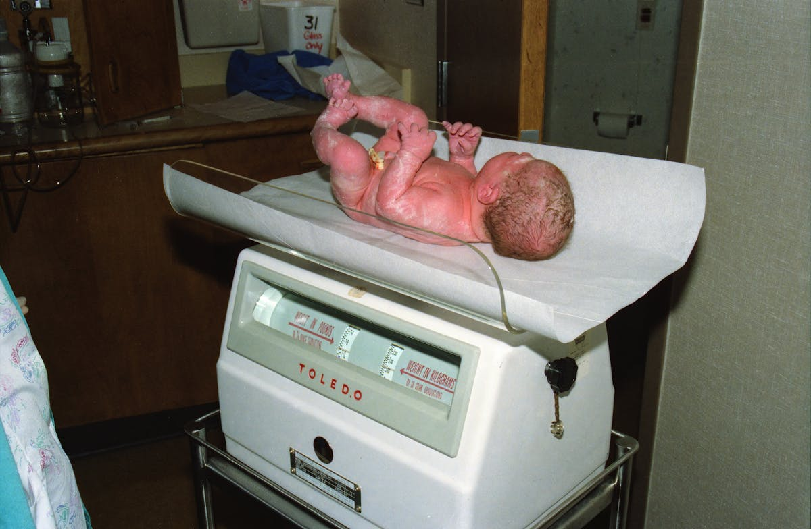
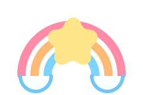

Child And Neonatal Care
Early feeding support, jaundice review, discharge follow-up, vaccination planning, and practical help for parents.
Services are grouped so visitors can quickly understand whether they need Dr. Priya Shivalli for child and neonatal care or Dr. N. C. Prakash for neuro-spine consultation.




Early feeding support, jaundice review, discharge follow-up, vaccination planning, and practical help for parents.
Tracking milestones, nutrition, feeding habits, speech, behavior, and overall developmental progress through childhood.
Consultation for neck pain, backache, spondylosis, tumours, fractures, nerve injury, and neuro-spine surgery pathways.

Book with Dr. Priya for scheduled child and neonatal follow-up.
Get clarity on feeding, weight, height, milestones, and development.
Consult Dr. Prakash early for backache, nerve symptoms, fractures, or spondylosis concerns.
Call or WhatsApp to confirm whether the child-neonatal or neuro-spine pathway is right.

Reach the clinic for child and neonatal care, or contact Dr. Prakash directly for neuro-spine appointments from Monday to Saturday, 5.00 pm to 7.00 pm.
Clear service names, visible doctor ownership, and direct contact pathways make decisions easier.